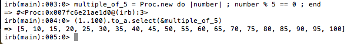

Object-Oriented Programming in Ruby
27 de mayo 2015
So much to learn! Let's talk about: Blocs, Procs, and Lambdas
First up: blocks
blocks > just some syntax and oh yeah, blocks are not objects.That is really important! So, if you want to apply the same code block to various parts of your program, you'd have to write that code every single time. That is not what POODR recommends because rule #1 is DRY: don't repeat yourself.
a block is identified with do .... end or {|thing| action on thing }.
def yield_test
puts "we are in the method"
puts "........"
yield
puts "back inside!"
end
yield_test {puts "coming in from the outside!"}
Want to see it live? Head here.
Next: Procs
Proc: a way to save a chunk of code and run it again. Why is that so powerful? Because let's say you want to apply the same code block in 10 different places in your program. Instead of writing the code 10 times, you write it once, save it as a Proc and the invoke the Proc the next 9 times.
what does it look like?
multiple_of_5 = Proc.new do |number|
number % 5 == 0
end
Now, let's see the Proc in action:
(1..100).to_a.select(&multiple_of_5)
Here's what I got in irb with that code snippet:
What are the advantages to setting up a Proc?
- Keeps your code DRY. Once you write the block, it shouldn't have to be re-written a bunch of times. Be efficient and save space. Write it once.
- Procs are objects and you can call a method on it. You can't do that with code blocks.
- Easiest way to call a Proc? #call method. Yeah. That easy.
hi = Proc.new do
puts "happy friday!"
end
hi.call
run it and see what happens!
Note: a proc treats returnlike an exit. If you've got a Proc inside a method and run the method, your proc will execute then leave the method. I'm still trying to wrap my head around that idea.
And...Lambdas
Lambdas also are objects. I'm catching on to this idea that Ruby is powerful because it is object-oriented. Just like a person can send and receive messages, objects in Ruby can send and receive messages. And, each object has its own behaviors and way of being. Just like each of us are unique with our own personalities, we can set up objects with specific characteristics that makes them unique. shoot, if I'm off on this...someone save me!
Lambdas are similar to Procs. What is different?
- lambda syntax is different. Duh, but not so.
test = lambda {|word| word.to_sym } - lambda checks the number of arguments you pass through but a Proc doesn't.
- lambda + return: returns your lambda and then continues with the rest of method. This is a big difference from Proc!
- seems like control flow behaviors are interesting and I'll need to play around and report back.